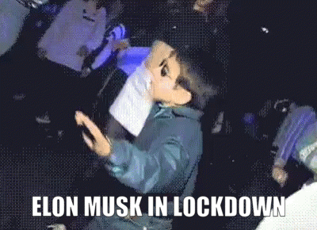
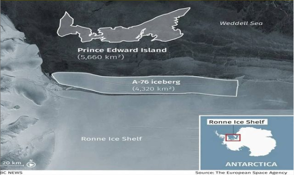

Everyone may have heard Elon in this lockdown right ? I hope yes . You know why ? because he
gained $144 Billion dollars in this lockdown due to his success of his company called TESLA and
He also made a thing which humanity never expected, even the astronauts laughed at him that is
he made a rocket landing on it own position like after launching the rocket , he made that rocket
landing to the same position. Elon Musk is called as Tecnoking and is planning to settle the
earth people to Mars . He is the founder of Dogecoin and he made this coin for fun but it is
going high everyday.

The break of Biggest Berg
The Biggest Iceberg in the world which is located in Antarica which was attached to Ronne Shelf has been broke down in May 2021 finally!!!. This berg is called A-76 iceberg started to make a slightly crack in 2017 but it was curing due to global warming which could made the iceberg break in 500 km square. But due to covid , this made a crack more bigger and made the iceberg break in 4320 km square. This can reach the sea level to 5cm. This may be small but in future it may cause a big imapct.

Harami Billu
Bill Gates and Melinda Gates has been a successful couple since 1994 . After
consecutive 27 years of love , Bill Gates and Melinda finally decided to divorce . After 27 years she got to know that before Bill Gates marrying
Melinda , Bill Gates was having affair with 3 girls . This is how our Bill Gates has been . We can say this Bill
Gates has cheated but not in terms of wife but in terms of tax also , he saved $300 million dollars tax.
His tax was coming more than $600 million dollars but due to this divorce , he should divide it and this is
how he saved $300 million dollar.He should still give but then also our Billu is a big playboy.
Long Live Putin Presidency !!!
Vladmir Putin who is the Sovient Russia has been confirmed that Vladmir Putin
will be the president of Russia till 2036 . His presidency
is not a decision taken by government or Putin but it a decision taken by the people . Vladmir
Putin has been a key for our Indian army as he supplies a top quality of weapons to India .
This country has been one of the most daringcountry and no one can win over it so easily . Putin presidency has never disrespected the
people who live there and has been given a wonderful freedom from which he got a great long lasting presidency.